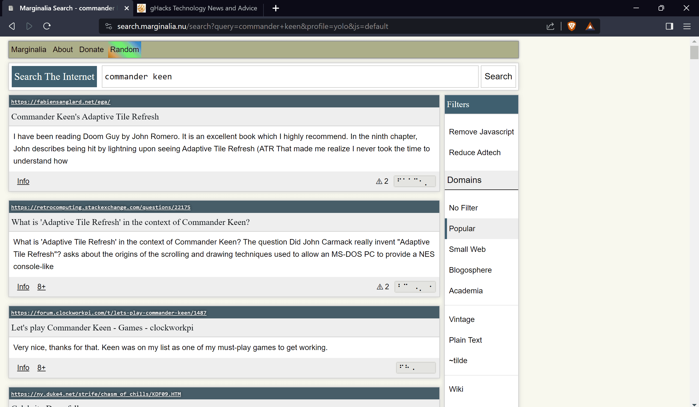

O Marginalia Search é um mecanismo de busca independente e experimental focado em encontrar conteúdo "não comercial", de texto pesado, na web. Criado por Viktor Lofgren, ele busca contornar a otimização de mecanismos de busca (SEO) tradicional, priorizando sites independentes e de nicho em vez de grandes plataformas corporativas.
Foco no texto: Ao contrário do Google, que prioriza imagens e mídia, o Marginalia valoriza sites ricos em texto.
Web independente: Destaca blogs pessoais, sites de hobby e conteúdo não comercial.
Sem IA: Utiliza tecnologias de busca mais simples, sem o uso de inteligência artificial generativa.
Ideal para nichos: Ótimo para pesquisas que exigem perspectivas alternativas ou informações obscuras, difíceis de achar em pesquisas comuns.
O projeto começou em 2021 durante a pandemia e é executado em hardware de baixo consumo, funcionando como uma alternativa focada na descoberta de conteúdo, não apenas na busca comercial.
Desenvolvido por Rafael Freire© - Todos os direitos reservados® - 2026